Consistent & Diciplined
Setup A1
Setup A1. Dibuat berdasarkan prinsip-prinsip Price Action, SMC (Smart Money Concept) dan ICT (Inner Circle Trader). Setup A1 adalah panduan komprehensif untuk trading yang cerdas dan efektif.
Kami akan membantu Anda memahami setiap aspek trading dari sudut pandang profesional, mulai dari analisis harga hingga manajemen risiko.
Focus
Consistent & Diciplined
Introducing
Metode A1 menjadi landasan utama dalam strategi saya, memprioritaskan manajemen risiko yang cermat untuk mencapai hasil perdagangan yang konsisten dan berkelanjutan. Selamat menikmati profit!"
Trading is not about being right, it's about being profitable. Mastering yourself is more important than mastering the markets
MARKET STRUCTURE
Market struktur merujuk pada pola atau kondisi umum dari pergerakan harga dan trend. Analisis struktur pasar membantu trader dalam memahami bagaimana harga bergerak, apakah sedang dalam fase konsolidasi, uptrend, atau downtrend. Berikut adalah penjelasan lebih rinci:.
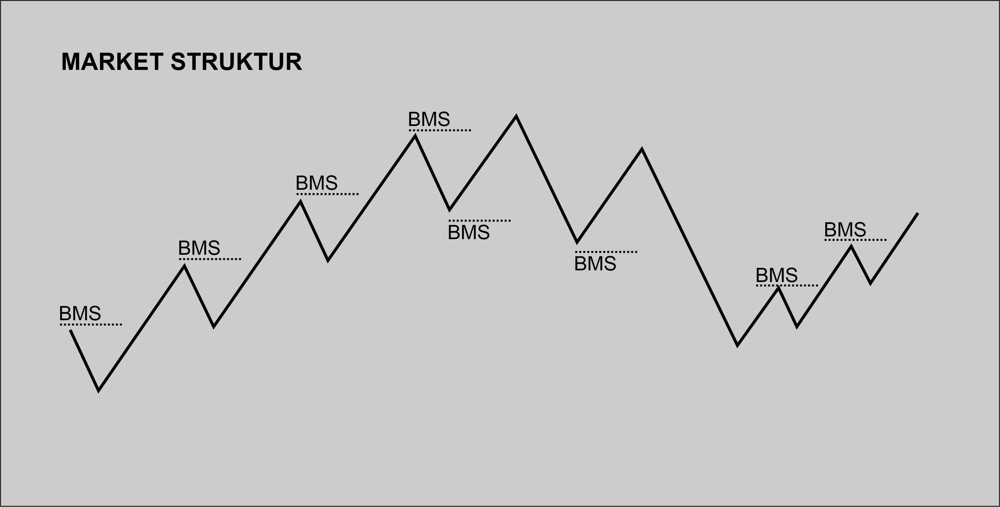Konsolidasi
terjadi ketika harga bergerak dalam kisaran terbatas atau cenderung datar tanpa arah tren yang jelas.
Ciri-ciri:Pada fase ini, harga cenderung bergerak di sekitar level tertentu, membentuk puncak dan lembah yang relatif sejajar. Tidak ada tren yang dominan selama konsolidasi.
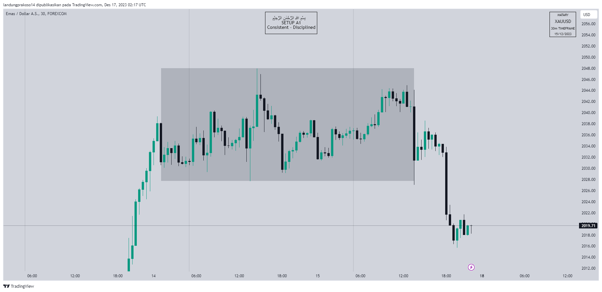Uptrend
terjadi ketika harga cenderung naik, membentuk Higher Highs dan Higher Lows secara berkelanjutan.
Ciri-ciri:Pada fase ini, setiap puncak baru (Higher High) dan lembah baru (Higher Low) berada pada tingkat yang lebih tinggi dibandingkan dengan yang sebelumnya.
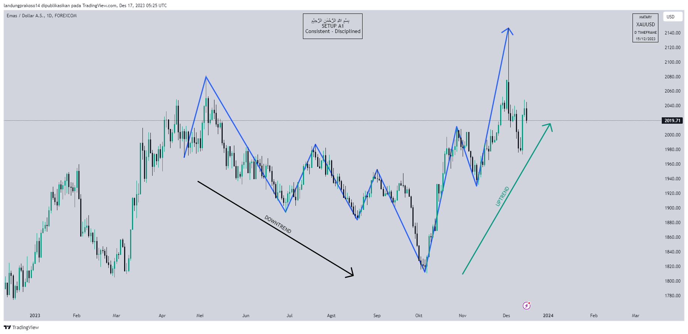 Downtrend
terjadi ketika harga cenderung turun, membentuk Lower Highs dan Lower Lows secara berkelanjutan.
Ciri-ciriPada fase ini, setiap puncak baru (Lower High) dan lembah baru (Lower Low) berada pada tingkat yang lebih rendah dibandingkan dengan yang sebelumnya.
LIQUDITY
Market FOREX adalah permainan zero sum, yang berarti bagi seorang pedagang/institusi untuk membeli/menjual 1 pasangan mata uang, diperlukan adanya pedagang/institusi lain dengan posisi yang berlawanan. Jika Smart Money (Bank) ingin membeli pasangan mata uang, mereka akan memerlukan penjual di pasar, dan fasilitas yang ada untuk menempatkan posisi ini di pasar disebut LIKUIDITAS..
Likuiditas didefinisikan oleh Stop Loss, di mana Stop Loss ada, di situlah likuiditas juga ada. Smart Money perlu mengaktifkan stop loss dari pesanan yang ada di pasar agar mereka dapat menempatkan posisi mereka di pasar.
Bank-bank memanipulasi harga karena likuiditas, tetapi mengapa? Bank-bank melakukan negosiasi dengan volume perdagangan besar dan terkadang sulit untuk menemukan pihak lain dari perdagangan mereka, sehingga mereka memanipulasi harga agar dapat memiliki posisi mereka di pasar.
Di Forex terdapat 2 jenis likuiditas:1. Buy Stops Liquidity (BSL)
PMH - Previous Month High
PWH - Previous Week High
PDH - Previous Day High
HOD - High Of Day
OLD HIGH - Swing High
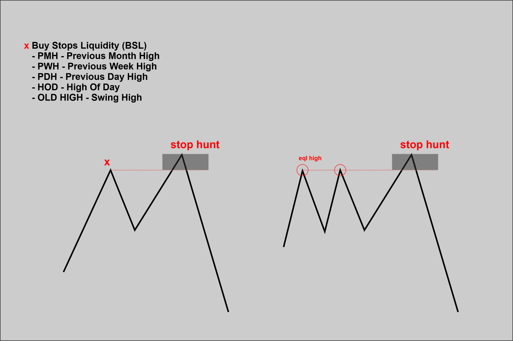 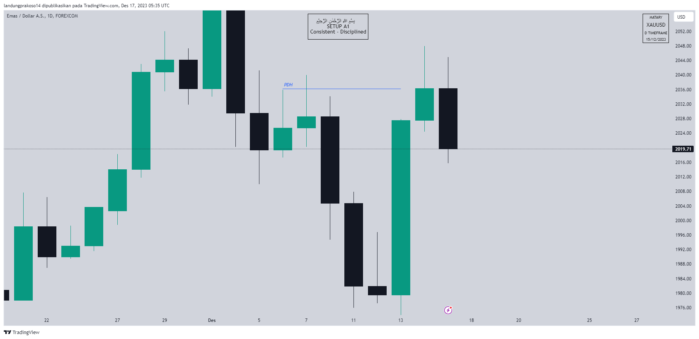 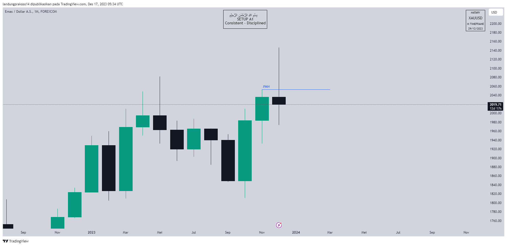
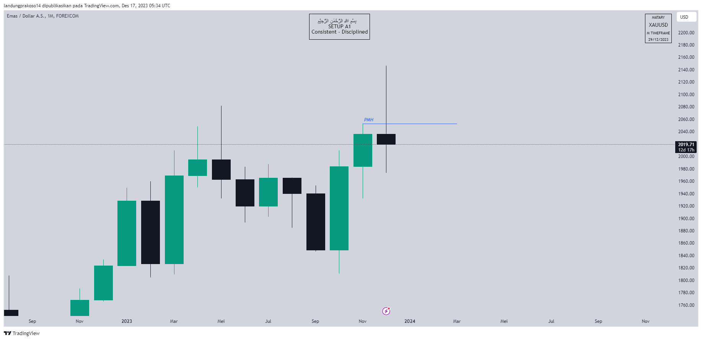
2. Sell Stops Liquidity (SSL)
PML - Previous Month Low
PWL - Previous Week Low
PDL - Previous Day Low
LOD - Low Of Day
OLD Low - Swing Low
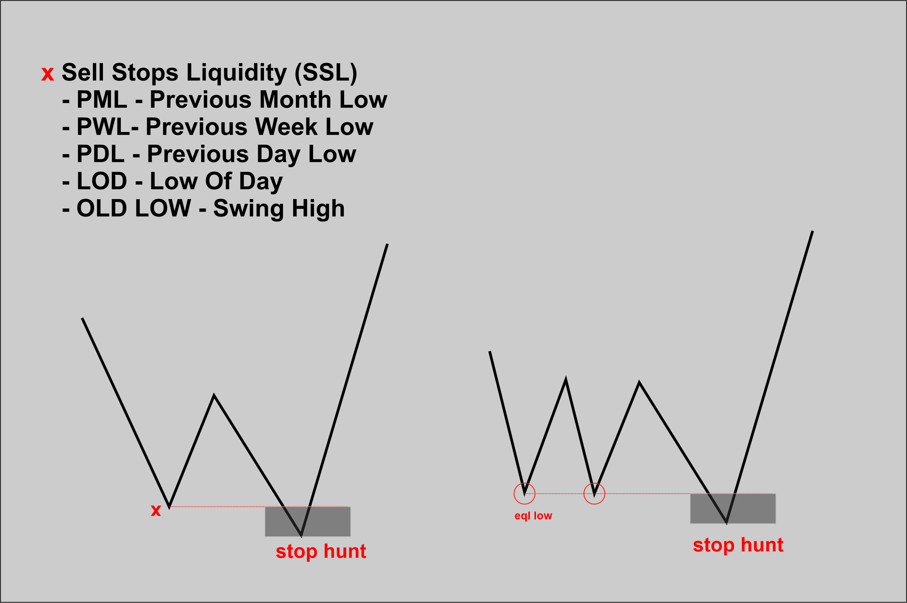 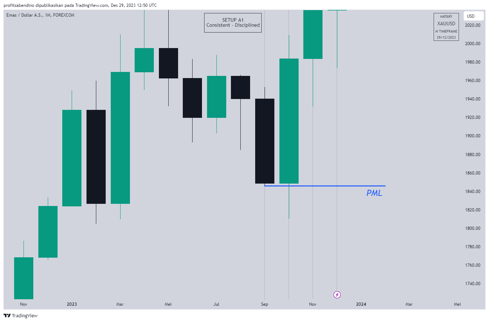 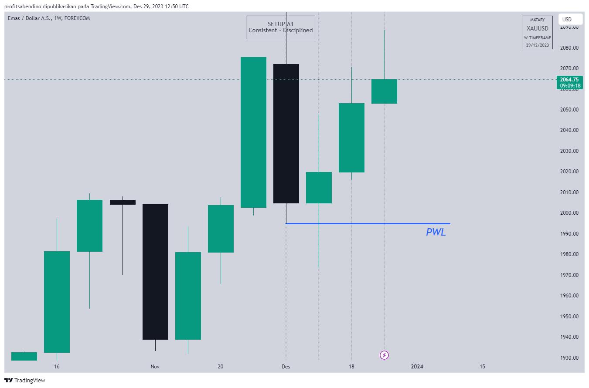 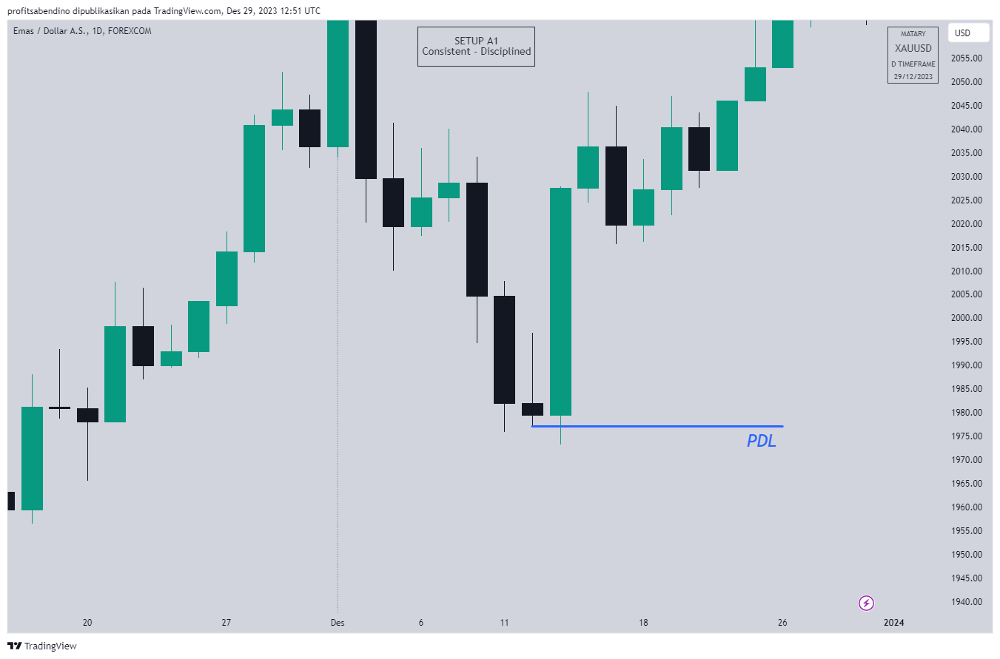Buy Stops Liquidity (BSL)
BSL Ini merujuk pada likuiditas yang muncul ketika Stop Losses dari pesanan penjualan diaktifkan.
Dinamika Pasar: Ketika BSL diambil, ini menciptakan tekanan penjualan di pasar karena bank-bank menggunakan likuiditas ini untuk menempatkan pesanan jual mereka.
Prosesnya Setelah Stop Losses dari pesanan penjualan diaktifkan, bank-bank mengambil keuntungan dari pergerakan turun yang dihasilkan untuk menempatkan pesanan jual mereka, memanfaatkan momentum yang diciptakan oleh likuiditas tersebut.
Strategi Bank: Bank-bank menggunakan BSL sebagai bagian dari strategi mereka untuk memanipulasi harga dan mengelola posisi mereka di pasar.
Pemahaman tentang konsep BSL dapat membantu trader untuk mengidentifikasi potensi perubahan arah pasar yang dapat dipicu oleh aktivasi Stop Losses, dan oleh karena itu, membantu dalam pengambilan keputusan trade yang lebih baik.
Setelah BSL diambil, pasar cenderung mengalami pembalikan ke arah downside atau penurunan harga. Ini karena para trader yang telah menempatkan stop order beli sebelumnya, setelah melihat harga mencapai level tersebut, sekarang memutuskan untuk menjual atau menutup posisi mereka, menyebabkan tekanan jual di pasar.
Begitu pula dengan Sell Stops Liquidity (SSL)
Stop Loss Hunter
Stop Hunt adalah suatu pergerakan yang digunakan untuk "memburu" likuiditas, terutama berfokus pada stop-loss. Ini adalah semacam "false breakout" yang terjadi di atas/bawah zona di mana terdapat likuiditas.
BLOCK REJECTION
Block di mana harga mencapai suatu zona atau level tertentu tetapi ditolak atau "direject" oleh market. Ini dapat terjadi ketika harga mencoba melampaui suatu level tetapi kemudian mengalami penolakan, sehingga membentuk pola candlestick yang menunjukkan ketidakmampuan untuk melanjutkan pergerakan ke arah tertentu. Ada beberapa block rejection dibawh ini.
ORDER BLOCKS / OBOrder Blocks adalah candles di mana Market Makers (Bank) menempatkan posisi mereka. ada 2 jenis Order Block.
a. Bullish Order Blocks:
Bullish order block adalah candle bearish terakhir sebelum terjadinya Break structure market Bullish.

b. Bearish Order Blocks:
Buearish order block adalah candle Bullish terakhir sebelum terjadinya Break structure market Bearish.
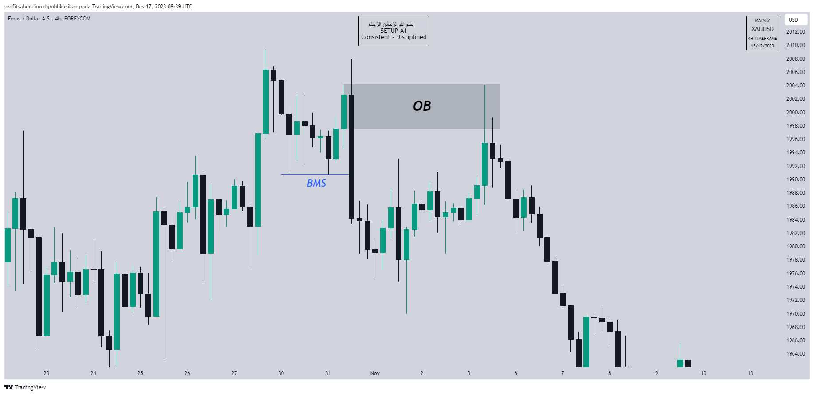FAIR VALUE GAP / FVG
"Fair Value Gap" adalah kondisi dimana harga ada perbedaan atau kesenjangan dalam penawaran likuiditas pada satu sisi pasar, dan ini sering dikonfirmasi oleh adanya ketiadaan likuiditas pada time frame yang lebih rendah (Lower Time Frame Charts) di dalam kisaran harga yang sama.
Cara melihat FVG adalah dengan adanya 3 candle dan candle yang kedua ( tengah ) tidak ketutup shadow dari candle 1 dan 2, jadi terlihat renggang
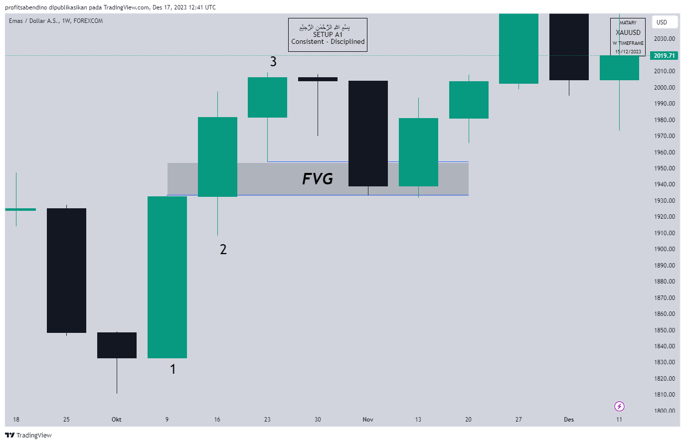*Sebenarnya ada beberapa block-block rejection tapi yang saya ambil cuma 2 ini.
ONE TRADE SETUP FOR LIFE
Accumulation, Manipulation And Distribution (AMD)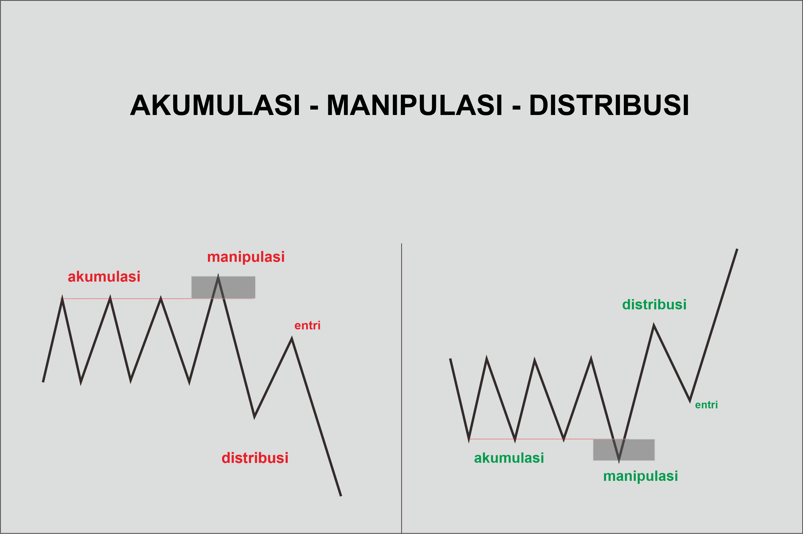
a. Accumulation
Description: Harga akan bergerak dalam range tertentu (sideaway).
Strategy: Selama fase akumulasi, kita dapat mengamati pergerakan harga yang cenderung berada dalam range tertentu dan tidak untuk mengambil keputusan.
a. Manipulation
Description: Harga akan menembus range untuk menarik atau menipu trader (fake breakout), terutama untuk menciptakan likuiditas seperti yang saya jelaskan di chapter liquidity.
Strategy: Selama fase manipulasi, kita harus waspada terhadap break dari range yang mungkin bersifat fake dan ditujukan untuk mengambil SL (stoploss hunter).
a. Distribution
Description:Harga akan bergerak melawan pergerakan manipulasi, dan pada tahap ini, kita dapat mempertimbangkan untuk melakukan posisi beli/jual pada block rejection setalah terjadinya BMS.
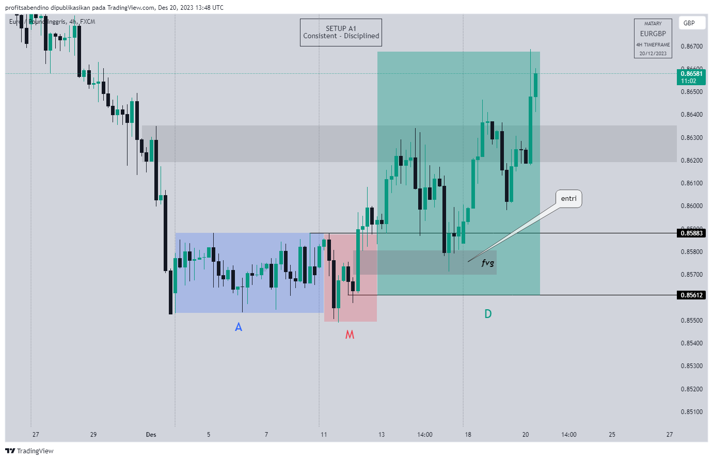
Kesuksesan trading dimulai dengan satu aturan sederhana: patuhi aturanmu, karena konsistensi dalam disiplin adalah kunci menuju hasil yang menguntungkan
SOP + Eksekusi
Pada dasarnya kita entri sesudah lekuiditas diambil, ada 3 metode yang kita pakai D1, W1 dan MN
DAILY (15-30 pips)Garis Swing High/Low Daily:
Marking garis swing high dan low dari candle Daily sebelumnya. Daily ini sebagai High Time Frame (HTF).

Peluang Entri
Mencari peluang entri Sell di atas swing high daily sebelumnya dan Buy di bawah daily sebelumnya.
Break Swing High/Low:
Jika swing high/low telah di-break, fokus mencari struktur market di time frame M15.
Marking Zone Block Rejection
Setelah M15 membuat Break Market Structure (BMS), marking zona blok rejection seperti dalam materi di atas.
Break Retest Entri
Untuk entri setelah BMS M15, tunggu harga di zona blok rejection yang telah di-marking
Konfirmasi di Time Frame M1 (LTF)
Setelah harga mencapai zona blok rejection, tunggu di time frame M1 untuk entri setelah adanya BMS di M1. Lakukan entri setelah Break.
WEEKLY (30-70 pips)
Garis Swing High/Low Daily:
Marking garis swing high dan low dari candle Weekly sebelumnya. Weekly ini sebagai High Time Frame (HTF).
Peluang Entri
Mencari peluang entri Sell di atas swing high Weekly sebelumnya dan Buy di bawah Weekly sebelumnya.
Break Swing High/Low:
Jika swing high/low telah di-break, fokus mencari struktur market di time frame H1.
Marking Zone Block Rejection
Setelah H1 membuat Break Market Structure (BMS), marking zona blok rejection seperti dalam materi di atas.
Break Retest Entri
Untuk entri setelah BMS H1, tunggu harga di zona blok rejection yang telah di-marking
Konfirmasi di Time Frame M5 (LTF)
Setelah harga mencapai zona blok rejection, tunggu di time frame M5 untuk entri setelah adanya BMS di M5. Lakukan entri setelah Break.

MONTHLY (70-200 pips)
Garis Swing High/Low Daily:
Marking garis swing high dan low dari candle Monthly sebelumnya. Monthly ini sebagai High Time Frame (HTF).
Peluang Entri
Mencari peluang entri Sell di atas swing high Monthly sebelumnya dan Buy di bawah Monthly sebelumnya.
Break Swing High/Low:
Jika swing high/low telah di-break, fokus mencari struktur market di time frame H4.
Marking Zone Block Rejection
Setelah H4 membuat Break Market Structure (BMS), marking zona blok rejection seperti dalam materi di atas.
Break Retest Entri
Untuk entri setelah BMS H4, tunggu harga di zona blok rejection yang telah di-marking
Konfirmasi di Time Frame M15 (LTF)
Setelah harga mencapai zona blok rejection, tunggu di time frame M15 untuk entri setelah adanya BMS di M15. Lakukan entri setelah Break.
SNR Advance ( Soon )
Tunggu waktu yang tepat untuk saya post, terlalu advance hehe
Jika tak sabar bisa kontak mentor dibawah.
SNR AdvanceSay hi and talk to us
Contact
Yogyakarta
Social
Copyright © 2021 Matary